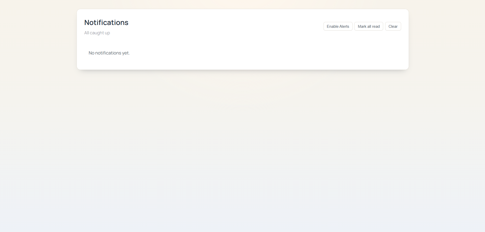
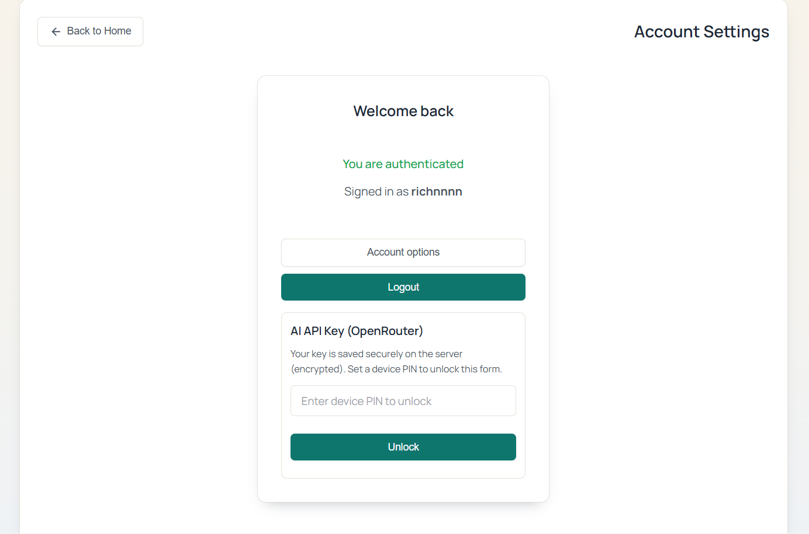

Feature walkthrough
6 real screens
Visitors can see the actual product instead of placeholders
Governed sharing
Shared links, added users, and revoke actions are visible
Desktop ready
The web layout feels cleaner for PC and tablet sessions
A polished tour of the real NotesAI-RNA product experience.
This page now shows the actual dashboard, AI workspace, task manager, notifications, account settings, and collaboration controls so the product feels complete, capable, and easier to trust.
Product story
The features now unfold like a product tour.
Each section below is tied to a real screen and a real workflow, which gives the whole site a more professional and grounded feel.
Dashboard
The dashboard gives users one confident place to begin.
Instead of feeling like a thin entry page, the home screen now shows welcome messaging, focus prompts, study actions, and quick navigation in one polished surface.
- Quick launch buttons for notes, tasks, and AI
- Focus cards for motivation and study tips
- Visible product depth from the first screen

AI workspace
AI feels more premium when modes are clear from the start.
The AI interface now presents a stronger first impression with a clean mode selector and a composer designed for longer study, writing, and research sessions.
- General mode for fast answers
- Deep research mode for more serious work
- Writing mode for drafting and refinement

Shared links
Collaboration now shows real control instead of vague sharing language.
The collaboration control panel makes the feature look serious by showing sessions, tokens, access state, refresh actions, and a visible revoke button.
- Copy a link directly from the workspace
- Add users from the same panel
- Revoke access immediately when needed

Task manager
Planning work beside notes and AI keeps the product practical.
The task screen adds structure with search, filtering, priorities, due dates, a creation form, and action buttons that make the workspace feel complete.
- Create tasks with title, details, date, and priority
- Filter the list to keep sessions focused
- Complete or manage tasks without leaving the app

Notifications
Even the alert center contributes to the product's professional feel.
The notifications panel gives a clean administrative view with alert toggles and maintenance actions, showing that the workspace accounts for ongoing activity too.
- Enable alerts directly from the screen
- Mark all notifications read in one action
- Clear the feed while preserving a calm empty state

Account settings
Account controls make the whole workspace feel owned and secure.
The account screen brings authentication, account options, logout, and protected API key access into one understandable layout.
- Clear signed-in state for the active user
- Quick access to account actions and logout
- Device PIN gate before revealing sensitive AI key controls

Why it lands better
The site now communicates product maturity much faster.
Once the real screens are in place, the value proposition becomes easier to understand: a lightweight app with serious tools for study, AI work, collaboration, and daily organization.
Visitors understand the product sooner
The new layout answers the obvious questions quickly: what the dashboard looks like, how AI works, and where tasks and account controls live.
Governed sharing and secure controls feel credible
Showing revoke actions, sign-in state, and protected key management makes the product feel more deliberate and less like a concept.
Notes, AI, and execution stay close together
The task manager, dashboard shortcuts, and AI composer make a better case for NotesAI-RNA as a real daily workspace.